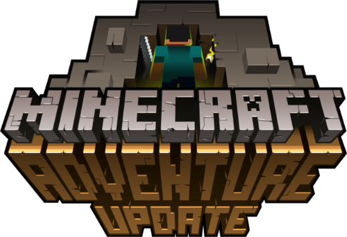

Modo Aventura de Minecraft
Concepto del Modo
El modo aventura está diseñado para jugadores que desean experiencias personalizadas con reglas específicas y objetivos únicos.
Características Principales
- Reglas Personalizadas: Modificación de mecánicas de juego
- Interacción Limitada: Restricciones en la destrucción y colocación de bloques
- Misiones y Objetivos: Seguimiento de tareas específicas
- Mapas Temáticos: Experiencias narrativas únicas
Usos del Modo Aventura
- Creación de mapas de aventuras con historias complejas
- Desarrollo de experiencias de juego dirigidas
- Implementación de desafíos específicos
- Exploración de narrativas interactivas

Vive experiencias únicas y personalizadas en el mundo de Minecraft.